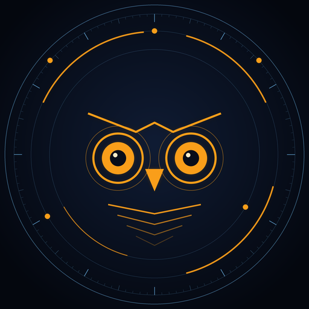

El bot de Discord definitivo para la comunidad de Overwatch. Notas de parche automáticas, tienda, estadísticas y más en Español y English.
Publica automáticamente en tu canal las nuevas notas de parche de Blizzard, noticias de temporada y artículos nuevos de la tienda.
Consulta el perfil competitivo de cualquier jugador (BattleTag) con rangos por rol, KDA, victorias y héroes más usados.
Configura fácilmente el idioma preferido de tu servidor entre Español e Inglés usando el comando /idioma.
Analiza los héroes con mayor índice de selección, victorias y baneos, o recibe sugerencias de composición de equipo para cada mapa.
/parche - Muestra la última nota de parche de Overwatch./tienda - Consulta la tienda semanal actual y packs con imágenes./heroe [nombre] - Ficha completa de un héroe (rol, vida, origen, habilidades y perks)./random [rol] - Elige un héroe al azar, opcionalmente filtrado por rol./mapa [nombre] - Información de mapas, ubicación y modos de juego./modo [nombre] - Explicación de modos de juego y lista de mapas compatibles./perfil [jugador] [modo] - Perfil público de jugador con estadísticas y héroes principales./rangos [jugador] - Rangos competitivos de un jugador por rol./comp [mapa] - Sugiere una composición de equipo equilibrada (1 tanque, 2 daño, 2 apoyo)./trivia - Pregunta interactiva de opción múltiple sobre héroes de Overwatch./meta [orden] [modo] [rol] - Estadísticas de meta en Europa (selección, victorias, baneos)./idioma [idioma] - Configura el idioma del bot en tu servidor (Español / English).Este proyecto es 100% open source bajo la licencia MIT. Puedes revisar el código, desplegarlo por tu cuenta usando Docker o contribuir en nuestro repositorio oficial en GitHub.